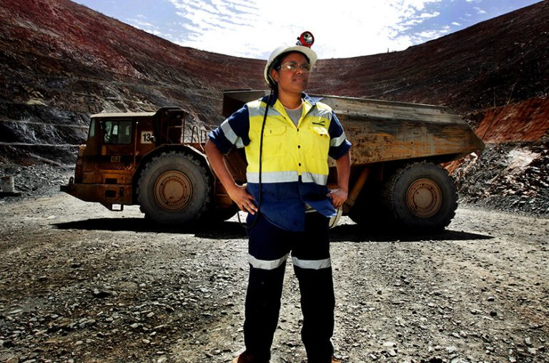

Engineers & Applied Scientists
Engineering Excellence for Safety and Sustainability
At Newmont, our dedicated team of Engineers and Applied Scientists assumes a critical responsibility in upholding industry-leading safety standards, driving sustainability initiatives, and championing the development of robust security measures. The complex nature of the extractives industry necessitates our engineers and scientists to continually innovate and implement technical solutions that advance and sustain these fundamental pillars. Currently, our scientific team is actively spearheading projects with a focus on sustainability. This includes initiatives to reduce greenhouse emissions, decarbonize refining practices, and strategically eliminate tasks that historically required personnel to be in the line of fire of machinery. Through cutting-edge technology and forward-thinking solutions, we are committed to not only meeting but exceeding industry expectations. Enhancing Public Acceptance Through Comprehensive Collaboration
Recognizing the paramount importance of community engagement in our operations, we are advocating for a more robust and integrated approach that bridges our scientific team with the Business Integrity & Compliance (BI&C) department. This strategic collaboration is envisioned to create a seamless dialogue channel between our technical experts and the broader community stakeholders, including the public and non-technical partners. Active Community Feedback Mechanism: By closely aligning with BI&C, our scientific team aims to establish an active and ongoing feedback mechanism. This initiative seeks to capture the diverse perspectives and concerns of the community, ensuring that their voices are heard and incorporated into our safety procedures and technical solutions. Real-World Perspectives for Refinement: Through this collaborative effort, we intend to leverage real-world perspectives gained from engaging with local communities. By actively seeking feedback on our safety procedures and technical solutions, we can better understand community expectations, concerns, and unique considerations. This invaluable insight will enable us to refine our approaches to align more closely with the needs and expectations of the communities we serve. Transparency and Trust Building: This proactive collaboration not only enhances the effectiveness of our safety measures but also contributes to building transparency and trust. By involving the community in the development and refinement process, we aim to demystify our operations, demonstrate accountability, and foster a sense of shared responsibility for safety and sustainability. Measurable Increase in Public Acceptance: Ultimately, our goal is to achieve a significant increase in public acceptance of our safety procedures and technical solutions. By embracing a collaborative model that actively involves the community, we believe we can build a foundation of trust that transcends traditional industry-practice boundaries. This commitment to comprehensive collaboration reflects our dedication to not only meeting regulatory standards but exceeding them by actively involving the community in co-creating a safer and more sustainable future.